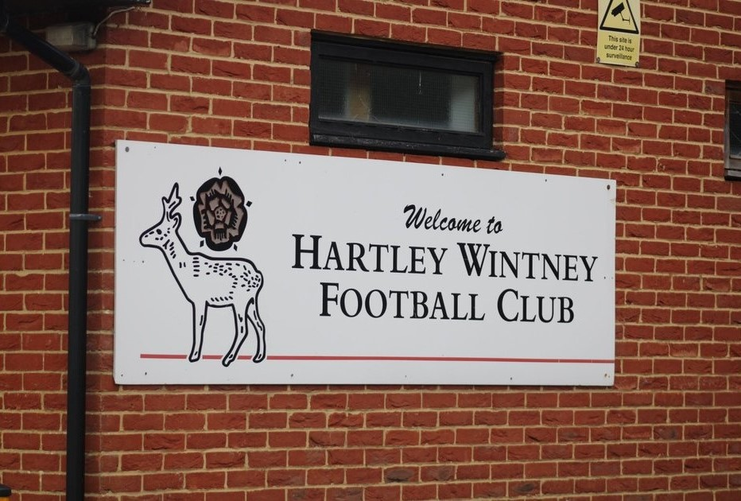

HWFC Summary
Hartley Wintney Football Club is a semi-professional football club that was founded in 1897 and plays in the Isthmian League in South England.
HWFC PlayersHartley Wintney have a squad of 16 players that have an average age of 24 years old.
List Of HWFC Players: Coulter(GK), Jones(CB), Jobson(CB), Amaning-Ampong(LB), Jones(LB), Akpan(RB), Paget(RB), Webb(CM), Wylie(CDM), Webb(CM), Quinn(CM), Obeng(CM), Ciardini(LM), Davey(RW), Moore(ST), Smith(ST).